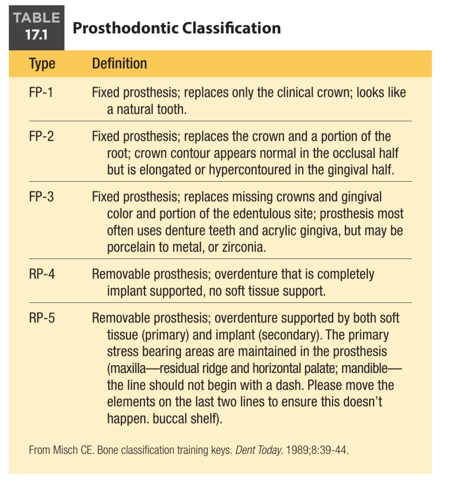
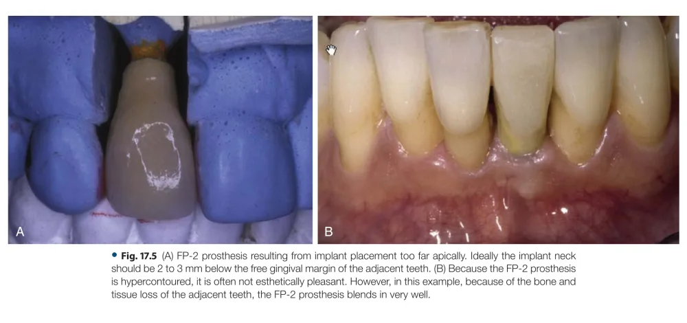

نسخه استخراجشده؛ ترجمه یا تأیید علمی انجام نشده است. وضعیت: captured
در یونیت پیش، هنگام بحث از ترتیب تصمیمگیری، دیدی که نخستین گام «تعیین نوع پروتز (FP-1، FP-2، FP-3، RP-4، RP-5)» است. این درس آن پنج گزینه را باز میکند.
نقطهی شروع: دندانپزشکی ایمپلنت پنج گزینهی پروتزی دارد.
سه گزینهی نخست، ثابت (FP) هستند:
• FP-1: پروتز ثابت؛ تنها تاج کلینیکی را جایگزین میکند؛ شبیه یک دندان طبیعی به نظر میرسد.
• FP-2: پروتز ثابت؛ تاج و بخشی از ریشه را جایگزین میکند؛ کانتور تاج در نیمهی اکلوزال طبیعی به نظر میرسد ولی در نیمهی لثهای بلند یا هایپرکانتور است.
• FP-3: پروتز ثابت؛ تاجهای ازدسترفته و نیز رنگ لثه و بخشی از ناحیهی بیدندان را جایگزین میکند؛ اغلب از دندان مصنوعی و لثهی آکریلی استفاده میکند، ولی میتواند پرسلن روی فلز یا زیرکونیا هم باشد.
و دو گزینهی متحرک (RP):
• RP-4: پروتز متحرک؛ اوردنچری که بهطور کامل ایمپلنتپشتیبان است، بدون هیچ پشتیبانی بافت نرم.
• RP-5: پروتز متحرک؛ اوردنچری که هم بافت نرم (اولیه) و هم ایمپلنت (ثانویه) از آن پشتیبانی میکنند. نواحی اصلی تحمل استرس در پروتز حفظ میشوند — در ماگزیلا ریج باقیمانده و کام افقی، و در مندیبل شلف باکال.
و اکنون مهمترین نکتهی این درس — و اگر تنها یک چیز از این صفحه نگه داری، همین باشد:
دو گروه FP و RP بر پایهی دو معیار کاملاً متفاوت تعریف میشوند.
دربارهی FPها بدان: «این گزینهها به مقدار ساختارهای بافت سخت و نرم جایگزینشده و جنبههای پروتز در منطقهی زیبایی بستگی دارند.»
ولی دربارهی RPها: «آنها به مقدار پشتیبانی ایمپلنت و بافت نرم بستگی دارند، نه به ظاهر پروتز.»
یعنی FP-1 تا FP-3 را «چه چیزی جایگزین میشود» تعیین میکند و RP-4 و RP-5 را «چه چیزی پشتیبانی میکند».
این تمایز در بالین اهمیت مستقیم دارد: میتوانی دو اوردنچر ببینی که دقیقاً یک شکلاند، یکی RP-4 و دیگری RP-5 — چون تفاوتشان زیر پروتز است، نه در ظاهرش.
و وجه مشترک همهی گزینههای ثابت: «ناتوانی بیمار در خارج کردن پروتز.»
و کارکرد ارتباطی این طبقهبندی: این گزینهها «برای انتقال ظاهر پروتز نهایی به همهی اعضای تیم ایمپلنت و به بیمار» به کار میروند. یعنی این یک زبان مشترک است، نه فقط یک فهرست دانشگاهی.

FP-1 دشوارترین گزینه است، و این بخش نشان میدهد چرا.
شرط ورودیاش سختگیرانه است: «باید حداقل از دست رفتن بافت سخت و نرم وجود داشته باشد.» و: «حجم و موقعیت استخوان باقیمانده باید جایگذاری ایدهآل ایمپلنت را در محلی مشابه ریشهی یک دندان طبیعی ممکن سازد.»
و جایگاه بالینیاش: «FP-1 بیشتر در ناحیهی قدامی ماگزیلا مطلوب است، بهویژه در منطقهی زیبایی هنگام لبخند یا صحبت، و در بیماران با خط لبخند بالا.»
و اکنون سه مانع اصلی:
مانع اول — ناهمخوانی ابعادی، با عدد:
«قطر سرویکالی یک انسیزور مرکزی ماگزیلا حدود ۶٫۵ میلیمتر با مقطع بیضی تا مثلثی است. اما اباتمنت ایمپلنت معمولاً ۴ میلیمتر قطر و مقطع گرد دارد. بنابراین ناهمخوانیهای ذاتی میان دندان طبیعی و ایمپلنت وجود دارد.»
۶٫۵ میلیمتر بیضی در برابر ۴ میلیمتر گرد. این فقط تفاوت اندازه نیست؛ تفاوت شکل مقطع هم هست. و این ناهمخوانی «ذاتی» است — یعنی با تکنیک بهتر حل نمیشود.
مانع دوم — استخوان که خودش عقب مینشیند:
«استخوان لابیال نازکی که روی سطح فاسیال ریشهی قدامی ماگزیلا قرار دارد، پس از از دست رفتن دندان بازسازی میشود و عرض کرست به سمت کام جابهجا میشود و تا ۴۰ درصد در دو سال نخست کاهش مییابد.»
چهل درصد در دو سال. این عدد را نگه دار — در یونیت استخوان موجود دوباره به آن برمیگردیم.
مانع سوم — بافت نرم و مثلث سیاه:
چون عرض یا ارتفاع استخوان کرستال اغلب پس از از دست رفتن چند دندان مجاور ناکافی است، افزایش استخوان پیش از جایگذاری اغلب لازم است. و: «پاپیلای بیندندانی بهندرت در ریجهای بیدندان وجود دارد؛ بنابراین افزایش بافت نرم هم اغلب برای بهبود کانتور لثهای بیندندانی لازم است.»
و هشدار: «نادیده گرفتن این گام باعث فضاهای مثلثی «سیاه» باز میشود — یعنی جایی که پاپیلا باید باشد — هنگامی که بیمار لبخند میزند.»
و جملهای که مرز عملی FP-1 را تعیین میکند:
«دستیابی به پروتزهای FP-1 بهویژه وقتی بیش از دو دندان مجاور غایب باشند دشوار است.»
بیش از دو دندان مجاور — این مرز عملی توست. دلیلش هم روشن است: تحلیل استخوان و نبود بافت نرم بیندندانی، نتیجهی زیبایی نهایی را بهویژه در ناحیهی سرویکالی تاجها پیچیده میکند.
و مادهی انتخابی: «مادهی ترمیمی انتخابی برای پروتز FP-1، زیرکونیا یا لیتیوم دیسیلیکات است.»
حالا FP-2 — که اغلب نه یک انتخاب، بلکه یک ناگزیری است:
«FP-2 تاج آناتومیک و بخشی از ریشهی دندان طبیعی را بازسازی میکند.»
و سازوکارش: «حجم و توپوگرافی استخوان موجود در مقایسه با موقعیت ایدهآل استخوان یک ریشهی طبیعی (۱ تا ۲ میلیمتر زیر محل اتصال سمانـمینا) اپیکالتر است و جایگذاری اپیکالتر ایمپلنت را در مقایسه با FP-1 دیکته میکند.»
به فعل «دیکته میکند» دقت کن. FP-2 اغلب پیامد وضعیت استخوان است، نه یک تصمیم زیباییشناختی.
و نتیجهی ظاهری: «در نتیجه، اگرچه لبهی انسیزال در موقعیت درست است، یکسوم لثهای تاج بیشازحد کشیده یا هایپرکانتور است، معمولاً اپیکالتر و لینگوالتر نسبت به دندان اصلی.»
یک تشبیه گویا: «این ترمیمها شبیه دندانهایی هستند که تحلیل استخوان پریودنتال و تحلیل لثه دارند.»
و یک توصیهی ارتباطی که ارزش بالینی مستقیم دارد:
«بیمار و درمانگر باید از همان آغاز درمان آگاه باشند که دندانهای پروتزی نهایی بلندتر از دندانهای طبیعی سالم (بدون تحلیل استخوان) به نظر خواهند رسید.»
«از همان آغاز» — نه در جلسهی تحویل. این تفاوت میان یک انتظار مدیریتشده و یک شکایت است.
و یک عدد که مرز میان FP-1 و FP-2 را در عمل تعیین میکند:
«در حالت ایدهآل، گردن ایمپلنت باید ۲ تا ۳ میلیمتر زیر مارجین آزاد لثهی دندانهای مجاور باشد.»
۲ تا ۳ میلیمتر. عمیقتر از این، امرجنس پروفایل بلندتر میشود و نتیجه به سمت FP-2 میرود — و این وضعیت را «FP-2 حاصل از جایگذاری بیشازحد اپیکال ایمپلنت» مینامند.
و یک نکتهی مهم که FP-2 را از یک «شکست» به یک «انتخاب» تبدیل میکند:
«یک ترمیم FP-2 چندواحدی به موقعیت ایمپلنت بهاندازهی FP-1 در جهت مزیالی یا دیستالی نیاز ندارد، چون کانتور سرویکالی هنگام عملکرد نمایش داده نمیشود. موقعیت ایمپلنت میتواند بر پایهی عرض ایدهآل استخوان، زاویهبندی یا ملاحظات بهداشتی انتخاب شود، بهجای صرفاً خواستههای زیبایی.»
این یک آزادی طراحی واقعی است. حتی این هم ممکن است: «گاهی ایمپلنت ممکن است در امبرژر میان دو دندان قرار گیرد. این اغلب برای دندانهای قدامی مندیبل در ترمیمهای ثابت تمامقوس رخ میدهد.»
و راهحل زیباییاش: «اگر چنین شود، ناحیهی زیباتر معمولاً نیازمند آن است که دو سوم انسیزال دو تاج از نظر عرض ایدهآل باشند، چنانکه گویی ایمپلنت آنجا نیست. تنها ناحیهی سرویکالی به خطر میافتد.»
ولی یک قید سختگیرانه باقی میماند: «اگرچه ایمپلنت در موقعیت ایدهآل مزیوـدیستالی قرار نگرفته، باید در موقعیت درست فاسیالـلینگوال قرار گیرد تا کانتور، بهداشت و جهت نیروها به خطر نیفتند.»
پس آزادی تنها در یک محور است. در محور مزیوـدیستالی میتوانی مصالحه کنی؛ در محور فاسیالـلینگوال نه — و دلیلش را از ماژول یک میدانی: جهت نیرو.
و مادهی انتخابی FP-2 همان مادهی FP-1 است: «مادهی انتخابی برای پروتز FP-2، زیرکونیا یا لیتیوم دیسیلیکات است.»
